Camshaft Position Actuator Oil Control Valve Replacement - Bank 2 (Left Side) Exhaust
Camshaft Position Actuator Oil Control Valve Replacement - Bank 2 (Left Side) Exhaust
Tools Required
* J 39946 Crankshaft Socket
* EN 46327 Timing Chain Retention Tool
* EN 46328 Camshaft Holding Tool
Removal Procedure
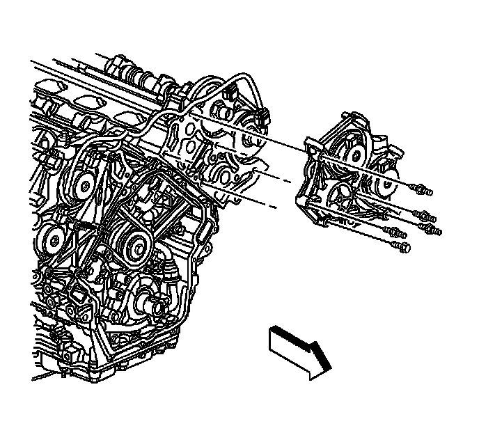
1. Remove the left actuator housing. DO NOT remove the camshaft position (CMP) actuator solenoids from the housing. Refer to Camshaft Position Actuator Housing Replacement - Left Side (Camshaft Position Actuator Housing Replacement - Left Side) .
2. Remove the crankshaft balancer. Refer to Crankshaft Balancer Replacement (Service and Repair) .
Important: The secondary timing chain has black links that are used for alignment when the primary and secondary timing gear and chain assemblies are being installed together. IT IS NOT NECESSARY for the black chain links to be aligned with the camshaft actuator timing marks when the secondary chain and gear components are being serviced separately.
3. Using the J 39946 , rotate the crankshaft until both bank 2 (left) CMP actuator timing marks are perpendicular (90 degrees) to the cylinder head deck surface and near the top of their rotation.
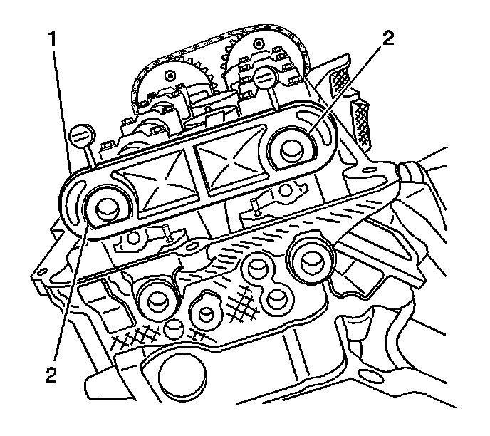
Caution: Refer to Camshaft Holding Tool Caution (Camshaft Holding Tool Caution) .
4. Install the EN 46328 (1) to the camshafts (2).
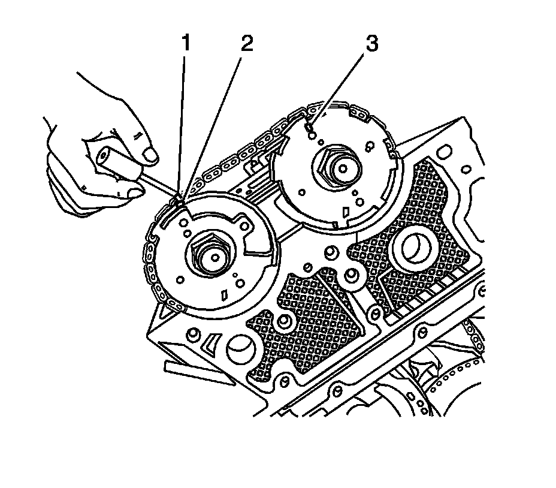
5. Use a paint stick to create a mark (1) on the timing chain link adjacent to each camshaft position actuator timing mark (2, 3).
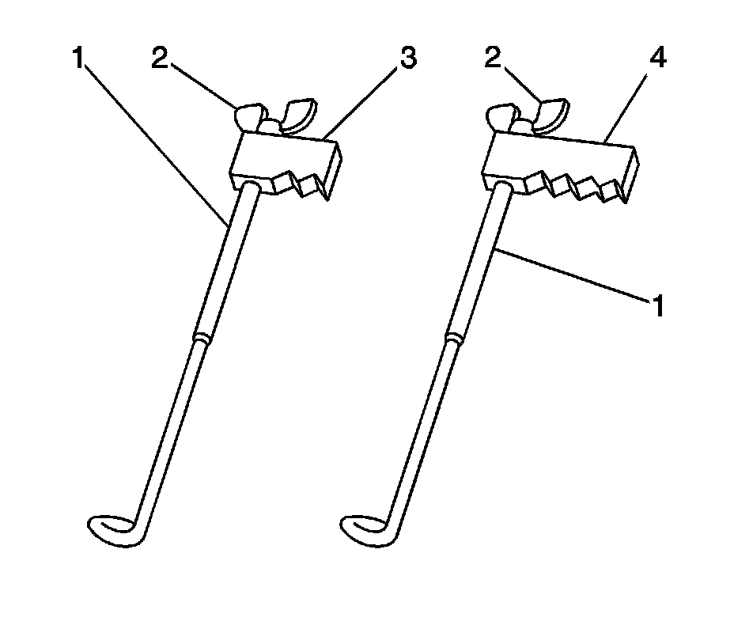
6. Install the EN 46327 (1) using the installation of the EN 46327 timing chain retention tool procedure.
Installation of the EN 46327 Timing Chain Retention Tool - Left Bank
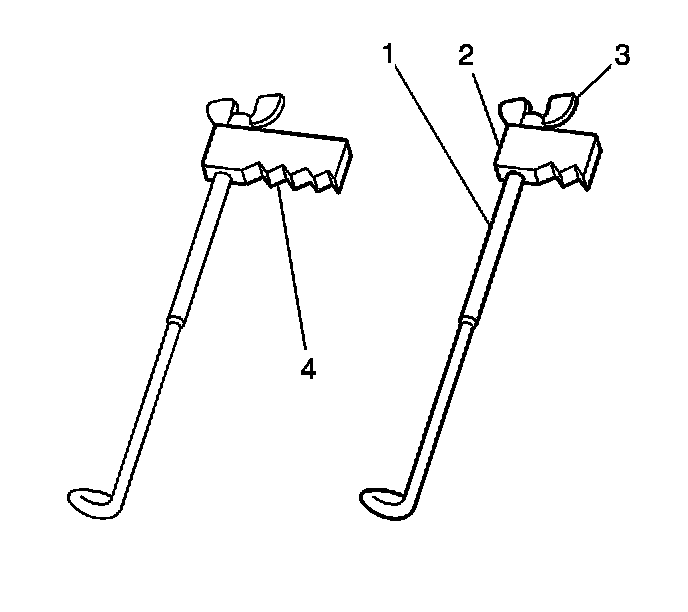
1. Rotate the wing nut (3) of the EN 46327 to the top of its travel.
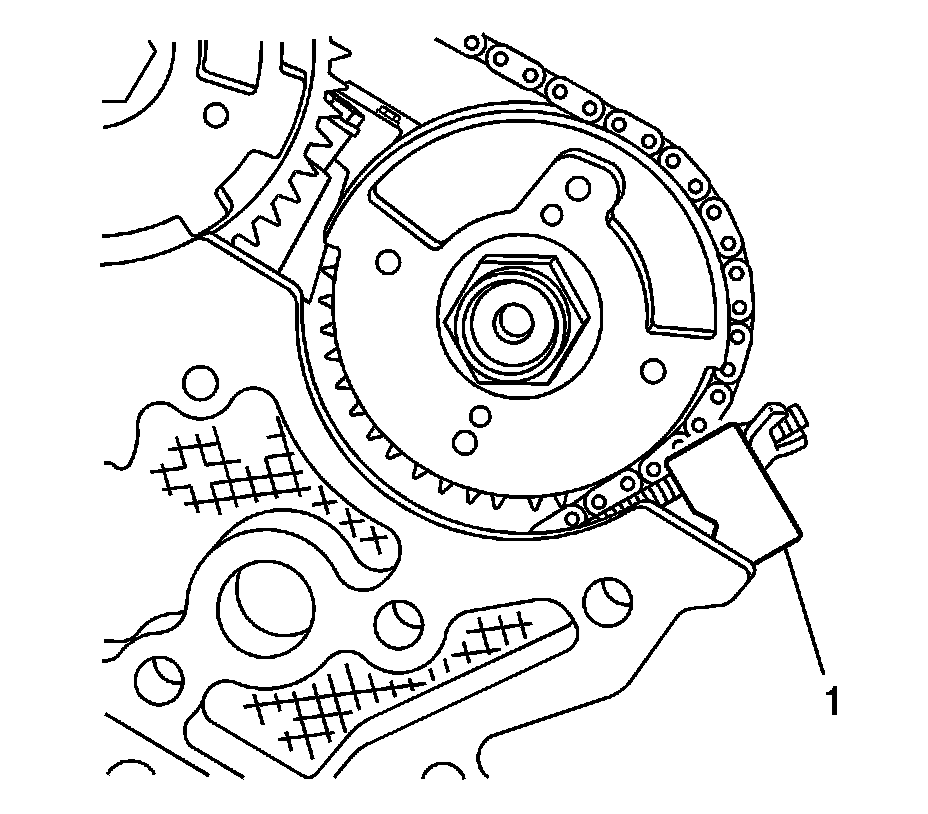
2. Position the bottom retention tool on the cylinder head with the V-notch of the block (1) adjacent to the left exhaust camshaft actuator timing sprocket and chain as shown.
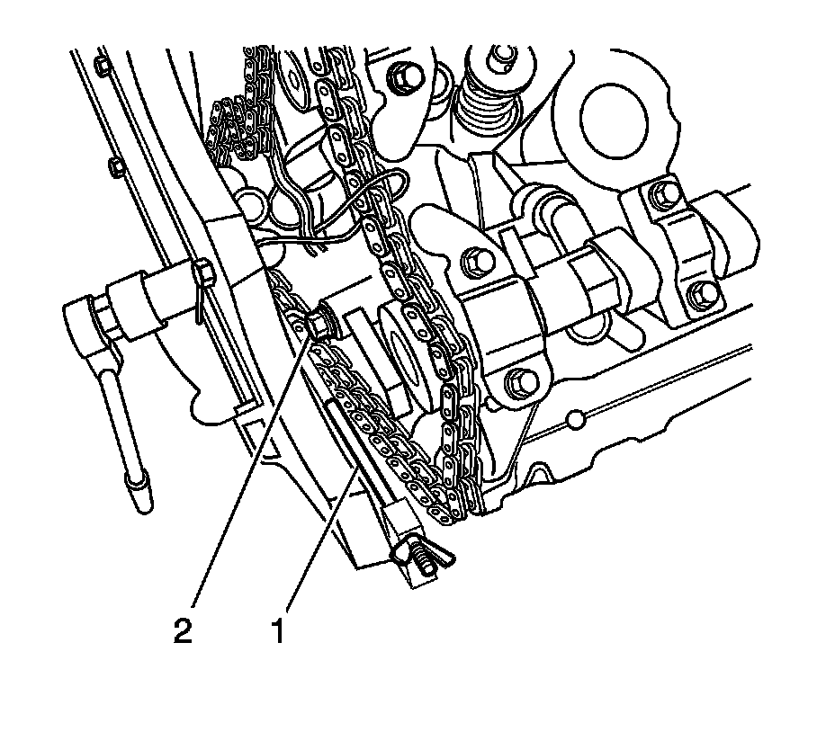
3. Insert the hook end (2) into a secondary timing chain link as shown.
4. Rotate the wing nut until it contacts the retention tool block (1). DO NOT tighten the wing nut at this time.
5. Rotate the wing nut of the EN 46327 (4) to the top of its travel.
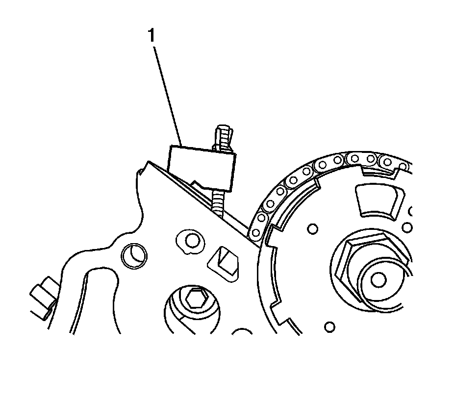
6. Position the top retention tool on the cylinder head with the V-notch of the block (1) adjacent to the left intake camshaft actuator timing sprocket and chain as shown.
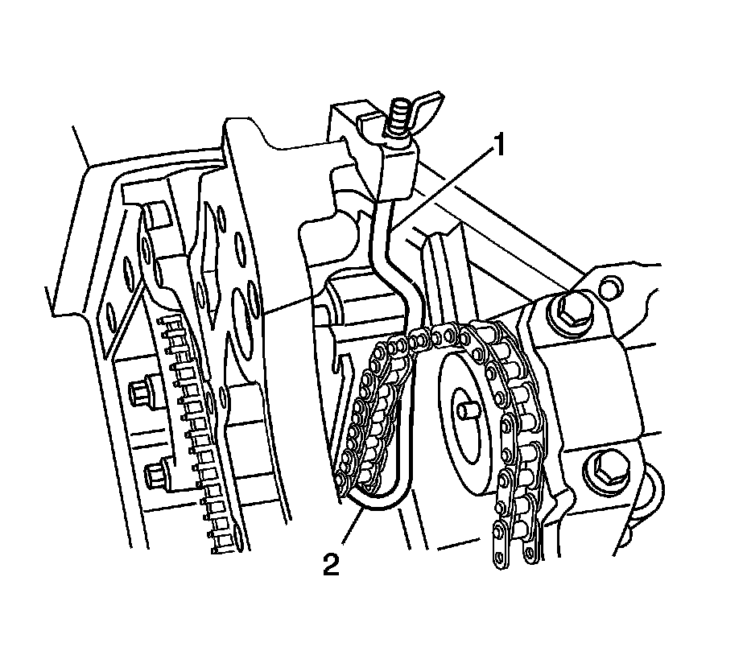
7. Insert the hook end (2) into a secondary timing chain link as shown.
8. Rotate the wing nut until it contacts the retention tool block (1). Alternately tighten both wing nuts to retain the chain.
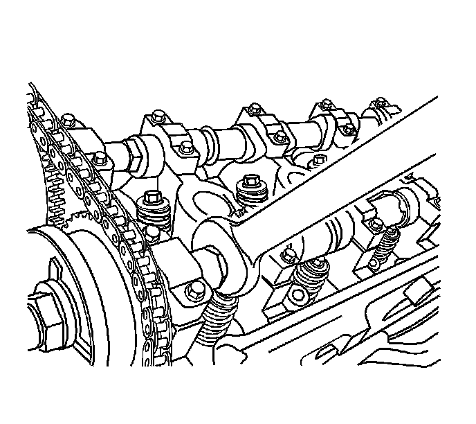
Notice: Refer to Torque Reaction Against Timing Drive Chain Notice (Torque Reaction Against Timing Drive Chain Notice) .
9. Use an open end wrench on the hex cast into the left exhaust camshaft to prevent the camshaft from rotating when loosening the camshaft oil control valve.

10. Loosen and remove the left exhaust oil control valve (8).
Installation Procedure
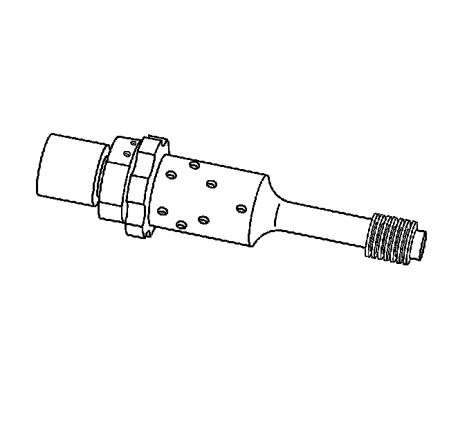
1. Install the oil control valve through the opening in the left exhaust camshaft position actuator and thread it into the left exhaust camshaft.
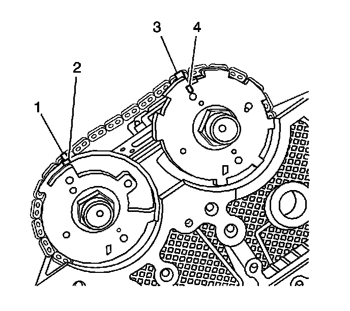
2. Ensure both camshaft actuator timing marks (1, 3) are aligned with the paint marks on the secondary timing chain previously created.
Notice: Refer to Torque Reaction Against Timing Drive Chain Notice (Torque Reaction Against Timing Drive Chain Notice) .
Notice: Refer to Fastener Notice (Fastener Notice) .
3. Use an open end wrench on the hex cast into the left exhaust camshaft to prevent the camshaft from rotating when tightening the camshaft oil control valve.
Tighten the camshaft oil control valve to 120 N.m (89 lb ft).
4. Remove the EN 46327 (1).
5. Remove the EN 46328 (1) from the camshafts (2).
6. Install the crankshaft balancer. Refer to Crankshaft Balancer Replacement (Service and Repair) .
7. Install the left camshaft actuator housing. Refer to Camshaft Position Actuator Housing Replacement - Left Side (Camshaft Position Actuator Housing Replacement - Left Side) .